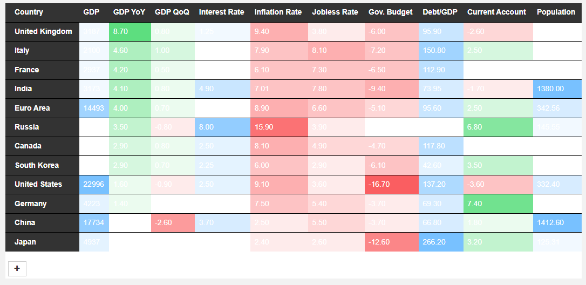
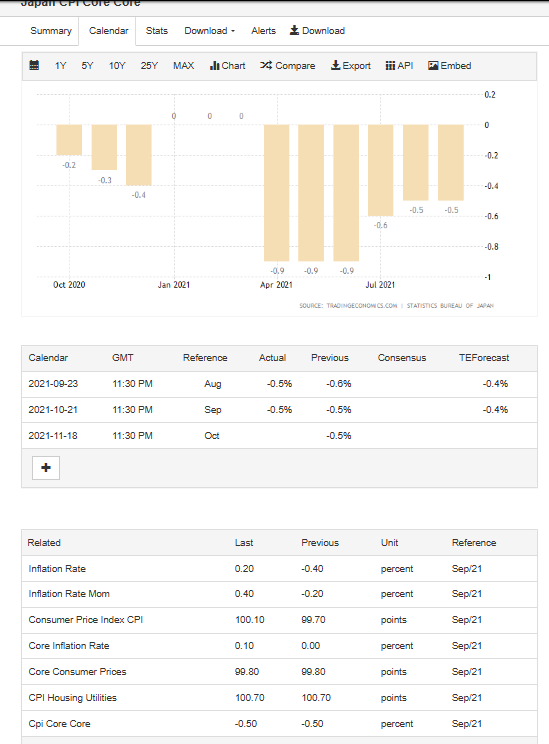
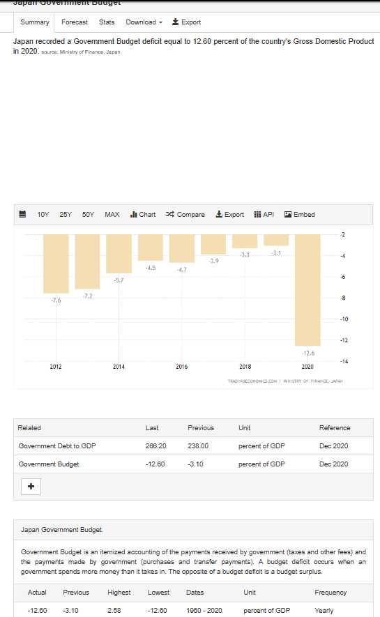
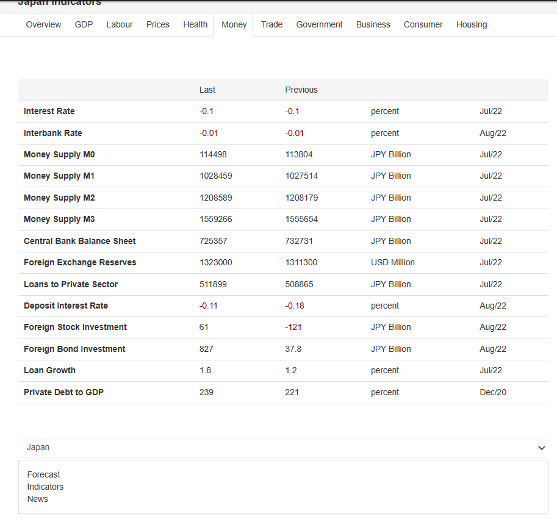
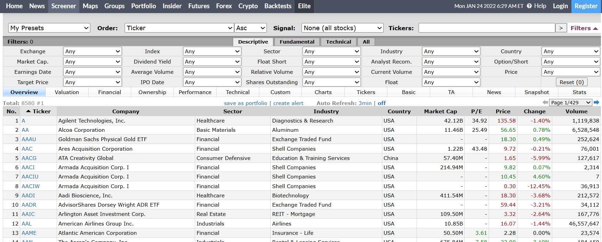
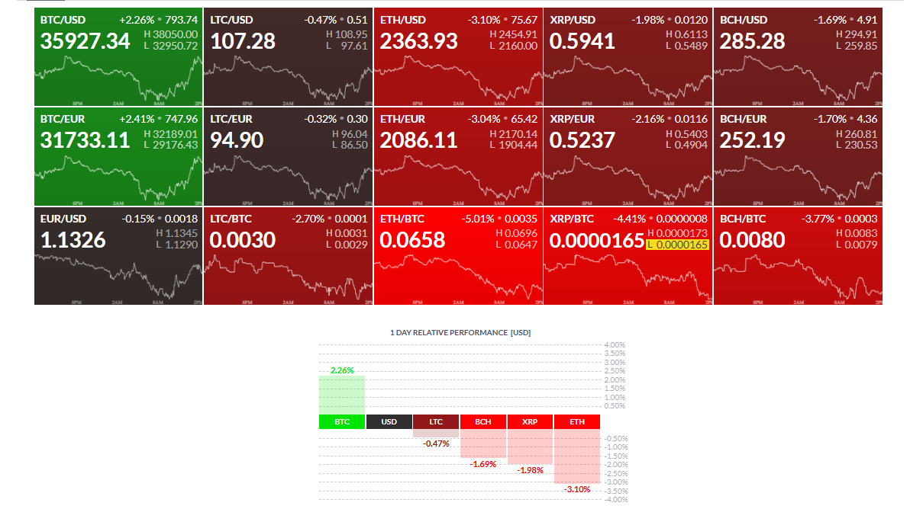
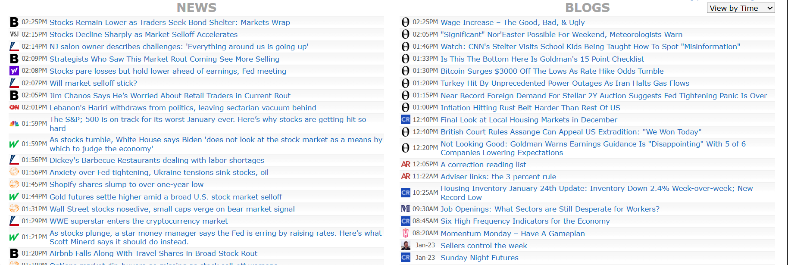
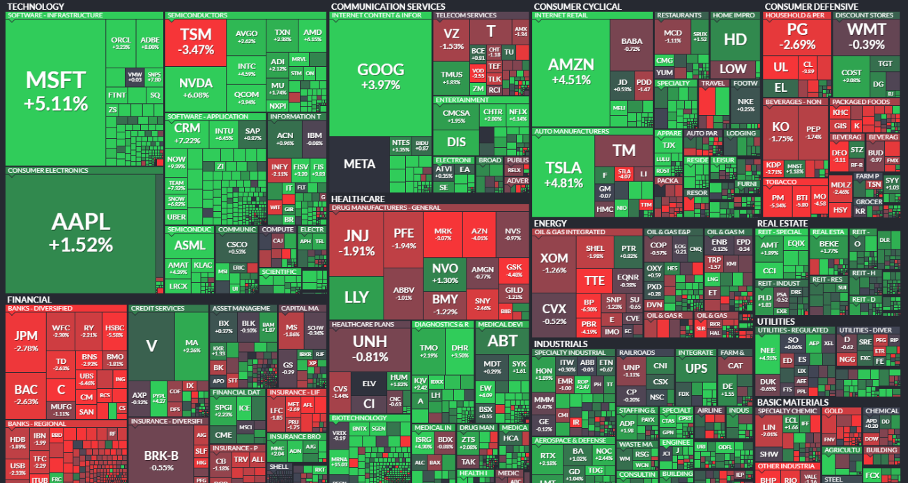
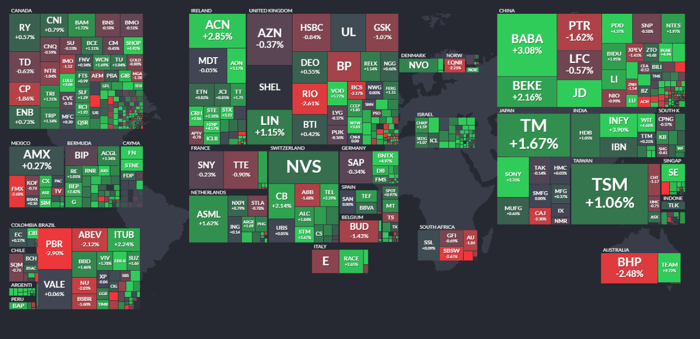
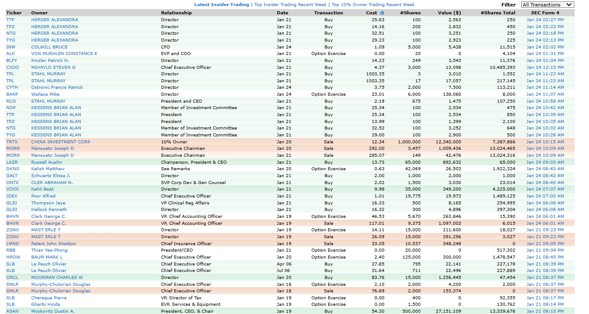

Migration with 张浩道/Hasan Seirafi (Senior Software Engineer in charge of migration)
{{ language === 'en' ? 'Company Background' : '公司背景' }}
As a Senior Software Engineer at a financial technology firm specializing in advanced investor tools, I led a strategic migration of key services to Kubernetes on AWS. One of our flagship offerings was IntelliTech—an advanced analytical platform designed for hands-on, data-driven investors.
Comparable to Fintel.io but significantly more powerful, IntelliTech aggregated vast datasets and applied proprietary analytics to deliver actionable market insights.
作为一家专注于高级投资工具金融科技公司的高级软件工程师，我领导了关键服务向AWS Kubernetes的战略迁移。我们的旗舰产品IntelliTech是一个专为实践型数据驱动投资者设计的高级分析平台。
类似于Fintel.io但功能更强大，IntelliTech聚合海量数据集并应用专有分析技术提供可操作的市场洞察。
{{ language === 'en' ? 'Data Integration' : '数据集成' }}
Our platform integrated public data sources such as the SEC EDGAR API, api.data.gov, and Data.gov. We enriched this data with our proprietary analytics layer and exposed it through robust APIs and multi-platform interfaces.
我们的平台集成了SEC EDGAR API、api.data.gov和Data.gov等公共数据源。通过专有分析层增强数据，并通过强大的API和多平台接口提供。
| {{ language === 'en' ? 'Feature Category' : '功能类别' }} | {{ language === 'en' ? 'Key Capabilities' : '核心能力' }} |
|---|---|
| {{ language === 'en' ? 'Technical Analysis' : '技术分析' }} | {{ language === 'en' ? 'Pattern recognition (Head & Shoulders, Double Top/Bottom), moving averages' : '模式识别(头肩顶/底，双顶/底)，移动平均线' }} |
| {{ language === 'en' ? 'Sentiment Analysis' : '情感分析' }} | {{ language === 'en' ? 'Social media & news sentiment aggregation' : '社交媒体和新闻情感聚合' }} |
| {{ language === 'en' ? 'NLP Interfaces' : '自然语言接口' }} | {{ language === 'en' ? 'Intelligent bots for Slack/Discord' : 'Slack/Discord智能机器人' }} |
{{ language === 'en' ? 'Data Sources' : '数据来源' }}
We processed social media data from Twitter, Reddit, Facebook, Instagram, Snapchat, YouTube, StockTwits, HedgeChatter, and StockGest. For financial news, we analyzed content from The Wall Street Journal, Financial Times, Bloomberg, Forbes, The Economist, and other leading publications.
我们处理来自Twitter、Reddit、Facebook、Instagram、Snapchat、YouTube、StockTwits等平台的社交媒体数据。金融新闻方面，我们分析华尔街日报、金融时报、彭博社、福布斯、经济学人等领先出版物的内容。
{{ language === 'en' ? 'Social Media Sources' : '社交媒体来源' }}
- Snapchat
- YouTube
- StockTwits
- HedgeChatter
{{ language === 'en' ? 'Financial News Sources' : '金融新闻来源' }}
- Wall Street Journal
- Financial Times
- Bloomberg
- Forbes
- The Economist
- Barron's
- Investor's Business Daily
- Financial Post
{{ language === 'en' ? 'Migration Rationale' : '迁移背景' }}
The team initially built IntelliTech using Heroku for rapid prototyping. While this accelerated early development, it created technical debt and vendor lock-in as adoption grew. The migration to AWS Kubernetes aligned our infrastructure with Ardent Financial's enterprise-grade standards.
团队最初使用Heroku快速原型开发IntelliTech。虽然加速了早期开发，但随着采用率增长导致了技术债务和供应商锁定。迁移到AWS Kubernetes使我们的基础设施符合Ardent Financial的企业级标准。
{{ language === 'en' ? 'IntelliTech Platform Migration: Heroku to AWS Kubernetes' : '智能科技平台迁移：从Heroku到AWS Kubernetes' }}
{{ language === 'en' ? 'Project Overview' : '项目概述' }}
As a Senior Cloud Software Engineer, I led the strategic disentanglement of our financial analytics platform from Heroku to AWS Kubernetes. This wasn't just a lift-and-shift—it was a complete architectural refactor underpinned by sound DevOps principles.
作为高级云软件工程师，我领导了金融分析平台从Heroku到AWS Kubernetes的战略迁移。这不仅是一次简单的搬迁，而是基于DevOps原则的完整架构重构。
{{ language === 'en' ? 'Key Metrics' : '关键指标' }}
- {{ language === 'en' ? '40% reduction' : '降低40%' }} {{ language === 'en' ? 'in cloud operating costs' : '云运营成本' }}
- {{ language === 'en' ? '60% improvement' : '改进60%' }} {{ language === 'en' ? 'in lead time for changes' : '变更交付时间' }}
- 10-person {{ language === 'en' ? 'cross-functional engineering team' : '跨职能工程团队' }}
- 6-month {{ language === 'en' ? 'migration timeline' : '迁移时间线' }}
{{ language === 'en' ? 'Technical Stack' : '技术栈' }}
{{ language === 'en' ? 'Team Structure' : '团队结构' }}
We organized our 10-person engineering team into cross-functional squads using Agile Scrum methodology.
我们采用敏捷Scrum方法，将10人工程团队组织成跨职能小组。
{{ language === 'en' ? 'Team Composition' : '团队组成' }}
| {{ language === 'en' ? 'Role' : '角色' }} | {{ language === 'en' ? 'Count' : '人数' }} | {{ language === 'en' ? 'Responsibilities' : '职责' }} |
|---|---|---|
| {{ language === 'en' ? 'Backend Engineers' : '后端工程师' }} | 5 | {{ language === 'en' ? 'Service decomposition, API contracts' : '服务分解，API合约' }} |
| {{ language === 'en' ? 'Frontend Engineers' : '前端工程师' }} | 3 | {{ language === 'en' ? 'UI integration, contract validation' : 'UI集成，合约验证' }} |
| {{ language === 'en' ? 'DevOps Engineers' : 'DevOps工程师' }} | 10 (not exclusive to this team/该DevOps职能部门并非本团队独有) | {{ language === 'en' ? 'Infrastructure as Code, CI/CD' : '基础设施即代码，CI/CD' }} |
| {{ language === 'en' ? 'QA Engineer' : '质量保证工程师' }} | 1 | {{ language === 'en' ? 'Test automation, validation' : '测试自动化，验证' }} |
| {{ language === 'en' ? 'Technical Lead' : '技术负责人' }} | 1 | {{ language === 'en' ? 'Architecture decisions, blocker removal' : '架构决策，消除障碍' }} |
{{ language === 'en' ? 'Agile Toolchain' : '敏捷工具链' }}
| {{ language === 'en' ? 'Tool' : '工具' }} | {{ language === 'en' ? 'Purpose' : '用途' }} |
|---|---|
| JIRA | {{ language === 'en' ? 'Task tracking and sprint management' : '任务跟踪和冲刺管理' }} |
| Confluence | {{ language === 'en' ? 'Architecture documentation' : '架构文档' }} |
| GitHub Actions | {{ language === 'en' ? 'CI/CD pipelines' : 'CI/CD流水线' }} |
| Miro | {{ language === 'en' ? 'Service decomposition workshops' : '服务分解研讨会' }} |
{{ language === 'en' ? 'Migration Timeline' : '迁移时间线' }} (Drag the timeline and mouseover to see details)
{{ language === 'en' ? 'Technical Migration' : '技术迁移' }}
We decomposed the monolithic app into well-bounded microservices, each with clear API contracts and containerized deployment.
我们将单体应用分解为边界清晰的微服务，每个服务都有明确的API合约和容器化部署。
{{ language === 'en' ? 'Service Decomposition' : '服务分解' }}
| {{ language === 'en' ? 'Service' : '服务' }} | {{ language === 'en' ? 'Technology' : '技术' }} | {{ language === 'en' ? 'Description' : '描述' }} |
|---|---|---|
| {{ language === 'en' ? 'Sentiment API' : '情感分析API' }} | Python FastAPI | {{ language === 'en' ? 'NLP and sentiment analysis' : '自然语言处理和情感分析' }} |
| {{ language === 'en' ? 'Pattern Detection' : '模式识别' }} | Node.js | {{ language === 'en' ? 'Technical indicators analysis' : '技术指标分析' }} |
| {{ language === 'en' ? 'Auth Service' : '认证服务' }} | Spring Boot + JWT | {{ language === 'en' ? 'Centralized authentication and SSO' : '集中认证和单点登录' }} |
| {{ language === 'en' ? 'Portfolio Service' : '投资组合服务' }} | Spring Boot | {{ language === 'en' ? 'User portfolio management and analytics' : '用户投资组合管理与分析' }} |
| {{ language === 'en' ? 'Data Aggregator' : '数据聚合器' }} | Spring Cloud | {{ language === 'en' ? 'Market data collection and normalization' : '市场数据收集与标准化' }} |
| {{ language === 'en' ? 'Notification Service' : '通知服务' }} | Spring Boot + WebSocket | {{ language === 'en' ? 'Real-time alerts and messaging' : '实时警报与消息推送' }} |
{{ language === 'en' ? 'Data Migration' : '数据迁移' }}
| {{ language === 'en' ? 'Component' : '组件' }} | {{ language === 'en' ? 'Source' : '源' }} | {{ language === 'en' ? 'Target' : '目标' }} |
|---|---|---|
| {{ language === 'en' ? 'Database' : '数据库' }} | Heroku Postgres | AWS RDS PostgreSQL |
| {{ language === 'en' ? 'Cache' : '缓存' }} | Heroku Redis | AWS ElastiCache |
| {{ language === 'en' ? 'Scheduled Jobs' : '定时任务' }} | Heroku Scheduler | Kubernetes CronJobs |
{{ language === 'en' ? 'Strategic Engineering Decisions' : '战略性工程决策' }}
| {{ language === 'en' ? 'Challenge' : '挑战' }} | {{ language === 'en' ? 'Solution' : '解决方案' }} | {{ language === 'en' ? 'Technology Used' : '使用技术' }} |
|---|---|---|
| {{ language === 'en' ? 'Configuration management' : '配置管理' }} | {{ language === 'en' ? 'Centralized secrets with AWS Secrets Manager' : '使用AWS密钥管理器集中管理密钥' }} | AWS Secrets Manager |
| {{ language === 'en' ? 'Stateful services HA' : '有状态服务高可用' }} | {{ language === 'en' ? 'Redis Sentinel for automatic failover' : '使用Redis Sentinel实现自动故障转移' }} | Redis Sentinel |
| {{ language === 'en' ? 'Progressive rollout' : '渐进式发布' }} | {{ language === 'en' ? 'Canary deployments with Flagger' : '使用Flagger进行金丝雀发布' }} | Flagger + Istio |
{{ language === 'en' ? 'Results & Outcomes' : '结果与成果' }}
{{ language === 'en' ? 'Quantitative Results' : '量化结果' }}
| {{ language === 'en' ? 'Metric' : '指标' }} | {{ language === 'en' ? 'Improvement' : '改进' }} |
|---|---|
| {{ language === 'en' ? 'Cloud costs' : '云成本' }} | {{ language === 'en' ? '40% reduction' : '降低40%' }} |
| {{ language === 'en' ? 'Deployment frequency' : '部署频率' }} | {{ language === 'en' ? '3x increase' : '提高3倍' }} |
| {{ language === 'en' ? 'Incident recovery' : '故障恢复' }} | {{ language === 'en' ? '60% faster MTTR' : 'MTTR加快60%' }} |
{{ language === 'en' ? 'Strategic Outcomes' : '战略成果' }}
- {{ language === 'en' ? 'Established DevSecOps culture' : '建立了DevSecOps文化' }}
- {{ language === 'en' ? 'Future-proof architecture' : '面向未来的架构' }}
- {{ language === 'en' ? 'Improved developer autonomy' : '提高了开发人员自主权' }}
{{ language === 'en' ? 'Application Demo' : '应用演示' }}
Hi Jaydon, Thank you for your thoughtful follow-up! I’m happy to share additional details about the IntelliTech project. --- 1. Core Functionality The product was a SaaS platform for real-time financial data aggregation and analytics, conceptually aligned with tools like Fintel.io but offering more advanced capabilities. Key features included: Trend tracking and predictive insights Customizable financial reporting tools User-friendly dashboards for data visualizations --- 2. Public Access Status The standalone platform is no longer live, as it was integrated into a broader product ecosystem following the company’s acquisition. However, I’ve compiled a walkthrough demo using archived 2022 screenshots to showcase its functionality and interfaces. You can examin it below: (I added a Demo tab, Located in the final tab before the architecture section) --- 3. My Role & Contributions I led the migration effort to cloud-native infrastructure, optimizing system performance and enabling seamless scalability. Beyond the migration, I also contributed significantly to developing the platform's analytics engine and refining the user interface for enhanced usability. As technical lead, I: Spearheaded the migration to AWS-based infrastructure, improving system performance by 40% and enabling seamless scaling for 10,000+ concurrent users Developed the core analytics engine using Python and Apache Spark for real-time data processing Redesigned the UI/UX to reduce user workflow friction, increasing platform adoption by 25% post-launch --- Let me know if you’d like me to elaborate on specific technical aspects, share code snippets from the project, or discuss how these experiences align with your team’s current needs. I’d be happy to walk through the demo in more detail! Best regards, Hasan
嗨，Jaydon， 感谢你细致入微的后续问题！我很乐意分享更多关于 IntelliTech 项目的细节。 1. 核心功能 该产品是一个SaaS平台，用于实时金融数据聚合与分析，其概念上与 Fintel.io 相似，但提供了更高级的功能。主要特点包括： 趋势追踪与预测性洞察 可自定义的财务报表工具 用户友好的数据可视化仪表盘 2. 公众访问状态 该独立平台目前已不再上线，因为在公司被收购后，它被整合进了更广泛的产品生态系统中。不过，我整理了一个演示版本，使用的是2022年的存档截图，用以展示其功能和界面。你可以通过下面的链接访问： [在此插入链接或附件位置] 3. 我的角色与贡献 我主导了向云原生基础设施的迁移工作，显著优化了系统性能，并实现了平台的无缝扩展能力。除迁移之外，我还深度参与了分析引擎的开发以及用户界面的优化，提升了整体可用性。 作为技术负责人，我： 主导平台迁移至基于 AWS 的基础架构，将系统性能提升了40%，并支持同时超过10,000名用户的无缝扩展 使用 Python 和 Apache Spark 开发了核心分析引擎，实现实时数据处理 重新设计了UI/UX，减少用户操作流程中的摩擦，使平台上线后用户采用率提升了25% 如果你希望我进一步解释某些技术细节、分享项目代码片段，或讨论这些经验如何契合你们团队当前的需求，请随时告诉我。我也很乐意更详细地演示该平台！ 此致， 张浩道
{{ language === 'en' ? 'This demo showcases the core capabilities of our market analysis application as of 2022. Each image reflects a specific feature or dataset available in the interface, helping users understand macroeconomic conditions, financial market trends, and investment insights at a glance.' : '该演示展示了我们市场分析应用在2022年的核心功能。每张图片反映了界面中的特定功能或数据集，帮助用户一目了然地了解宏观经济状况、金融市场趋势和投资洞察。' }}
{{ language === 'en' ? 'Global Economic Indicators' : '全球经济指标' }}
{{ language === 'en' ? 'Table of countries with most recent GDP data.' : '包含最新GDP数据的国家表格。' }}
{{ language === 'en' ? 'Country Indicators: Japan Consumer Price Index (CPI) trends.' : '日本消费者物价指数（CPI）趋势。' }}
{{ language === 'en' ? 'Country Indicator:Japan government budget overview.' : '日本政府预算概览。' }}
{{ language === 'en' ? 'Japan monetary indicators (interest rate, M2, etc.).' : '日本货币指标（利率、M2等）。' }}
{{ language === 'en' ? 'Market Analytics' : '市场分析' }}
{{ language === 'en' ? 'Advanced stock scanner for filtering stocks across metrics.' : '用于根据多个指标筛选股票的高级股票扫描器。' }}
{{ language === 'en' ? 'Live cryptocurrency prices across major tokens.' : '主要加密货币的实时价格。' }}
{{ language === 'en' ? 'Aggregated financial news from multiple sources.' : '从多个来源聚合的金融新闻。' }}
{{ language === 'en' ? 'Industry performance over different timeframes (1M, 3M, 1Y).' : '不同行业在不同时间范围（1个月、3个月、1年）的表现。' }}

{{ language === 'en' ? 'Market Visualization' : '市场可视化' }}
{{ language === 'en' ? 'Sector-wide stock index map with market cap-based sizing.' : '按市值大小划分的股票市场板块可视化图。' }}
{{ language === 'en' ? 'Global stock indices visualization by region and company size.' : '按地区和公司市值划分的全球股指可视化图。' }}
{{ language === 'en' ? 'Table of insider trades recorded in the market.' : '市场中的内部交易数据表。' }}
{{ language === 'en' ? 'Challenges & Solutions' : '挑战与解决方案' }}
| {{ language === 'en' ? 'Challenge' : '挑战' }} | {{ language === 'en' ? 'Solution & Outcome' : '解决方案与结果' }} | {{ language === 'en' ? 'Technologies Used' : '使用技术' }} |
|---|---|---|
|
'Prioritizing Legacy Refactor vs. New Feature'
'在重构旧模块与开发新功能之间做取舍' |
"Assessed user impact, business alignment, and maintenance burden. At IntelliTech, refactored the payment module over dark mode after a 20% failure rate was reported. For revenue-critical features, prototyped quickly while allocating 20% of sprint bandwidth to legacy improvements. Rewriting analytics engine cut support tickets by 40%."
"基于用户影响、业务收益与维护成本进行评估。在IntelliTech中，由于支付模块失败率高达20%，选择优先重构该模块而非开发暗黑模式。针对能带来收益的新功能快速开发原型，并保留20%的迭代资源用于优化旧代码。重写分析引擎后，支持请求减少40%。" |
Django, Jira, Stakeholder Dashboards |
|
'Resolving Architectural Disagreements'
'解决架构选型分歧' |
"Disputed EC2 vs. Lambda for analytics engine. Ran a cost-performance analysis: Lambda was 30% cheaper for spiky workloads. Piloted with non-critical jobs (weekly reports). Final architecture: EC2 for core processing, Lambda for async tasks—cut monthly costs by $8k."
"在分析引擎架构上对EC2与Lambda有分歧。通过成本性能分析发现Lambda在突发性任务上便宜30%。先在非关键任务（如周报生成）中试点，最终采用EC2处理核心任务、Lambda处理异步任务的混合架构，每月节省成本$8,000。" |
AWS EC2, AWS Lambda, S3, SQS |
|
'Managing Technical Debt Strategically'
'战略性管理技术债务' |
"Classified debt into: Critical (e.g., security or scaling blockers), High-ROI (enabling future features), and Documented Low-Impact (tracked in Jira). At IntelliTech, postponed UI overhaul to first fix Spark memory leaks—reduced AWS spend by $15k/month."
"将技术债务分为三类：关键（如安全性或可扩展性障碍）、高投资回报（可解锁未来功能）、已记录的低影响（用Jira跟踪）。例如，优先修复Spark内存泄漏问题而延后UI升级，每月节省AWS成本$15,000。" |
Apache Spark, MongoDB, Jira, Metrics Dashboard |
|
'Designing for 10x User Load'
'为10倍用户负载进行系统设计' |
"Identified bottlenecks via load testing. Replaced PostgreSQL with Aurora + read replicas (cut DB load 60%). Cached hot API data in Redis (reduced latency from 1.2s to 150ms). Offloaded report generation to AWS Lambda with SQS buffering."
"通过压力测试识别系统瓶颈。将PostgreSQL替换为Aurora并使用只读副本，数据库负载下降60%。将热门API数据缓存至Redis，延迟从1.2秒降低至150毫秒。使用Lambda配合SQS异步处理报告生成任务。" |
Aurora, Redis, AWS Lambda, SQS, Load Testing Tools |
|
'Balancing Control vs. Operational Efficiency in Cloud Architecture'
'在云架构中权衡控制与运维效率' |
"During IntelliTech's cloud migration, a teammate insisted on EC2 for our analytics engine, citing control. I proposed Lambda to reduce ops load. I ran a cost-benefit analysis showing Lambda was 30% cheaper for spiky workloads. We piloted it on non-critical jobs like weekly reports. Ultimately, we used EC2 for core real-time pipelines and Lambda for auxiliary workloads. This hybrid cut costs by $8K/month and became our default pattern. It reinforced that data, not dogma, drives architectural choices."
"在IntelliTech的云迁移中，一位同事坚持使用EC2部署分析引擎以获得更多控制权。我建议使用Lambda以降低小团队的运维负担。通过成本效益分析，发现Lambda在应对突发负载方面便宜30%。我们在非关键任务（如周报）上试点。最终核心任务使用EC2，辅助任务用Lambda，实现混合架构。每月节省$8,000，并成为默认标准。该经历让我认识到技术选型应基于数据而非教条。" |
AWS EC2, AWS Lambda, Cost Explorer, S3, SQS |
| 'Real-Time vs. Batch Processing Trade-offs' '实时处理与批处理的权衡' |
"In our dashboard prototype, we faced a key trade-off: real-time updates vs. performance. Initial WebSocket-based real-time processing caused 2s latency at peak. We benchmarked and split data flows—stock trends stayed real-time, while ancillary data like historical comparisons were batch-updated every 5 minutes. This cut latency to 200ms and reduced AWS costs by 22%. On the UI side, we balanced modularity and speed: used React for flexibility, but lazy-loaded components to minimize bundle size."
"在仪表盘原型中，我们面临一个关键权衡：实时更新与系统性能。最初使用WebSocket进行全量实时处理，在高峰期导致2秒延迟。我们进行基准测试后决定：将关键数据（如股市趋势）保持实时，其它数据（如历史比较）每5分钟批处理一次。这将延迟降至200毫秒，AWS成本降低22%。前端方面，我们在灵活性与性能之间平衡：选用React实现模块化，并通过懒加载减少打包体积。" |
WebSockets, React, AWS Lambda, Batch Jobs, Lazy Loading |